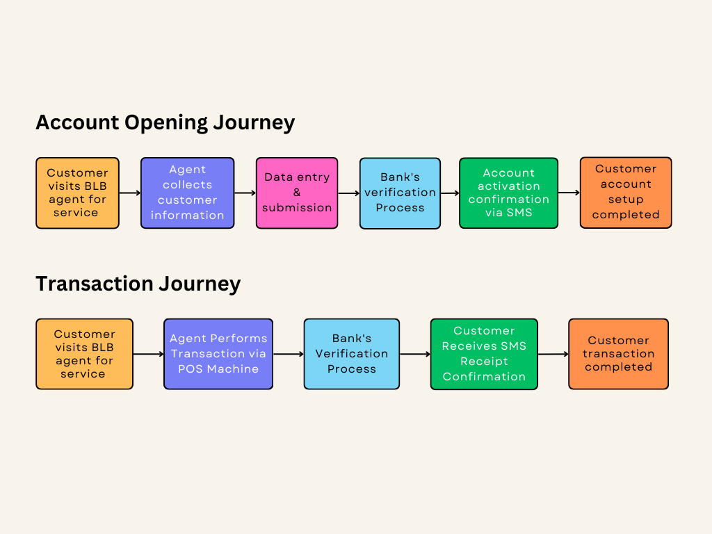
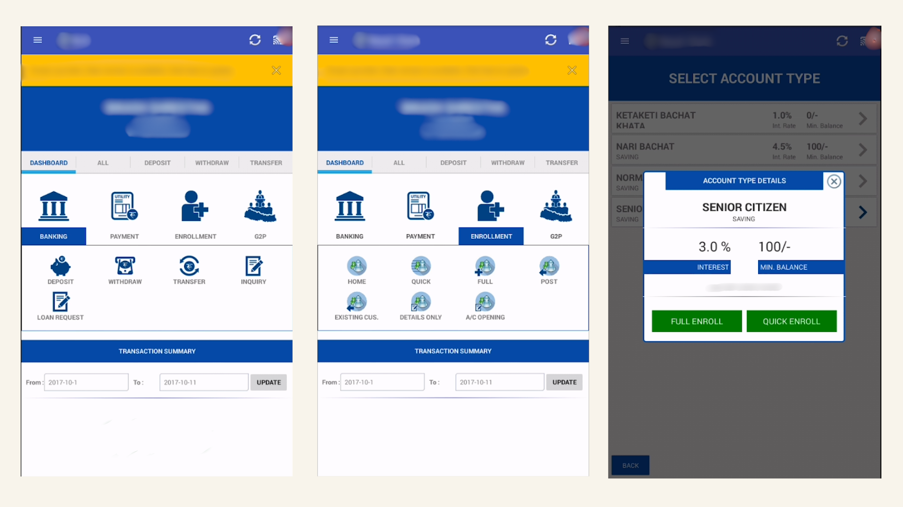
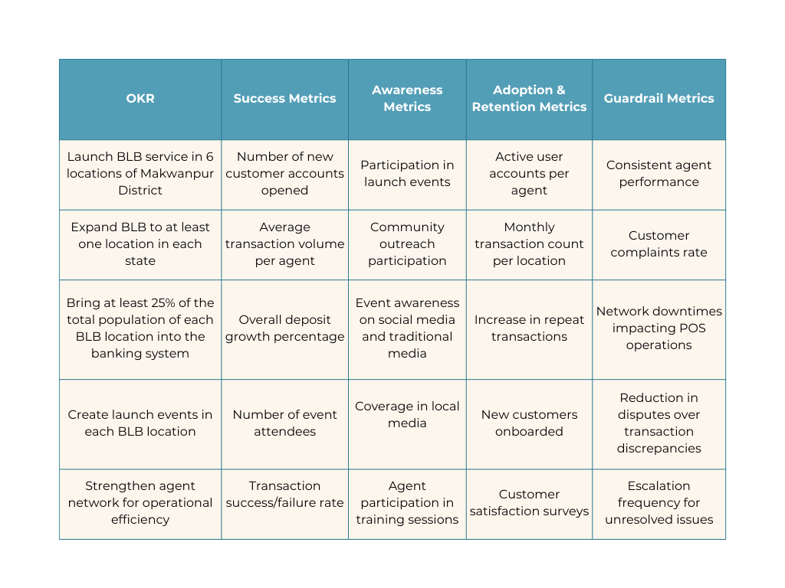

4. Product Flow (Details of the Feature/Product)
a. Customer Journey:
Customer visits BLB agent for service → Agent performs transactions via POS machine → Customer receives instant receipt confirmation via SMS.

b. Features:
- New Account Opening
- Deposit
- Withdraw
- Transfer
- Inquiry
- Statement
- Utility Payment
c. Wireframe
Some of the screenshots of BLB system;

d. User Stories:
- As a farmer, I want to deposit my daily earnings quickly, so I can save securely.
- As a small business owner, I want to pay utility bills conveniently to save time.
5. How Do We Measure Success?
These are some of the metrics used for measuring success.

6. Dependencies
Key dependencies for the success of BLB Implementation:
- Handling customer disputes efficiently at agent locations.
- Compliance requirements for cash handling at agent sites.
- Reliable internet connectivity at agent locations for POS operations.
- Leasing fees for POS machines.
- Marketing and promotional expenses.
- Integration of third-party POS system with the bank’s core banking.
- Coordination with IT for software integration.
- Marketing team for campaign planning.
For further details on Branchless Banking, feel free to Contact Me.